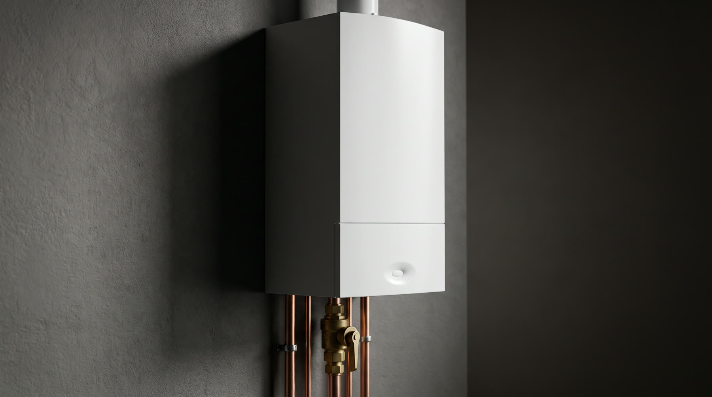
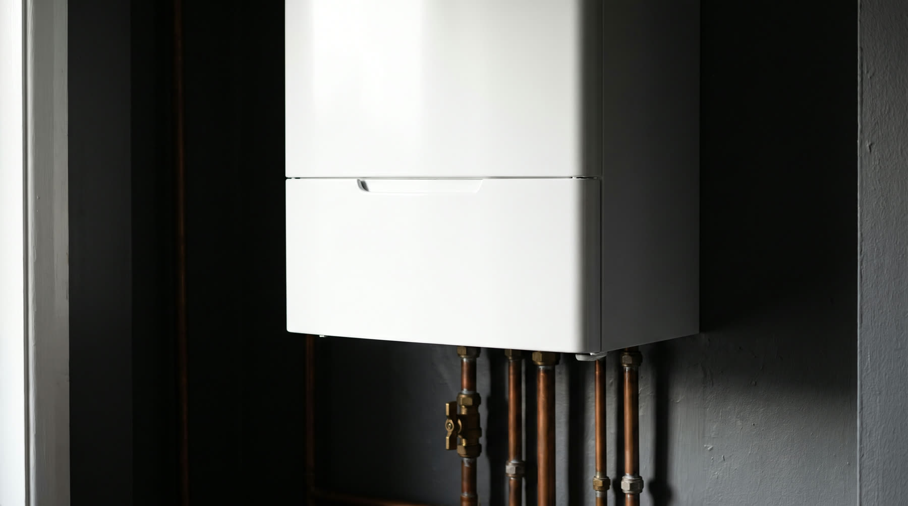
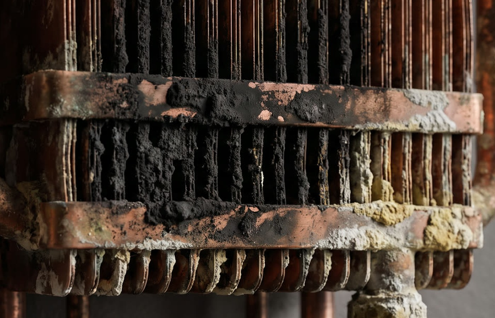

Przegląd i konserwacja
Coroczny serwis: czyszczenie, kontrola szczelności, pomiar spalin i ustawienie parametrów.
01
Przeglądy, naprawy i montaż kotłów gazowych. Ty mówisz, co się dzieje — ja mówię, ile i kiedy.
Biała obudowa i cicha praca nie mówią nic o tym, w jakim stanie jest urządzenie w środku.
Każdy może się zużyć, zabrudzić albo rozregulować. Awaria to zwykle jeden z nich — nie „cały kocioł do wymiany".
Sześć podzespołów, od których najczęściej zaczyna się awaria.
Żółty, kopcący ogień znaczy, że mieszanka jest źle ustawiona — palisz więcej gazu, a ciepła masz mniej.
Każdy milimetr osadu na tych żeberkach to ciepło, które ucieka kominem zamiast trafić do grzejników.
Pompa, manometr, szczelność połączeń. Spadające ciśnienie to najczęstszy powód zimnych grzejników na piętrze.
Sadza, korozja i osad. Kocioł jeszcze grzeje, ale zużywa więcej gazu, częściej się blokuje, a naprawa kosztuje wielokrotnie więcej.
Wyczyszczony wymiennik, ustawiony palnik, sprawdzona szczelność i ciśnienie. Kocioł pracuje tak, jak powinien.
Odbieram telefon osobiście i sam przyjeżdżam. Ten sam człowiek, który wycenia, robi robotę — i on odpowiada za to, jak kocioł pracuje później.
„Pełen profesjonalizm i błyskawiczna reakcja. Wszystko rzeczowo wyjaśnione."Beata Sroczyńska · Google
Pracuję na kotłach wszystkich popularnych marek. Nie wiesz, co się dzieje z Twoim? Zadzwoń i opisz objawy — zwykle wiem już przez telefon.
Coroczny serwis: czyszczenie, kontrola szczelności, pomiar spalin i ustawienie parametrów.
Kocioł zgasł, pokazuje błąd albo nie grzeje wody. Diagnoza i naprawa w umówionym terminie.
Dobór kotła pod metraż i instalację, demontaż starego, montaż i uruchomienie nowego.
Pierwsze uruchomienie po montażu, ustawienie krzywej grzewczej i temperatur pod Twój dom.
Usunięcie sadzy i osadu — realny wpływ na zużycie gazu i moc grzewczą kotła.
Wykonanie instalacji centralnego ogrzewania i kompletnych kotłowni w domach jednorodzinnych.
Najedź na pozycję, żeby zobaczyć, o czym mówię. Nic z tej listy nie jest opcjonalne — kocioł jest sprawny dopiero wtedy, gdy zgadza się wszystko naraz.


Złap suwak i przeciągnij. Po lewej stan przed czyszczeniem, po prawej po serwisie. Ta różnica to Twój rachunek za gaz.

Bez wyceny „na miejscu zobaczymy". Cenę i termin znasz, zanim przyjadę.
Mówisz, jaki masz kocioł i co robi. Wstępną cenę podaję od razu.
Umawiamy konkretną godzinę. Zwykle jestem w stanie przyjechać następnego dnia.
Przegląd albo naprawa na miejscu. Pokazuję, co było nie tak i dlaczego.
Kocioł ustawiony, instalacja sprawdzona. Wiesz, kiedy przyjechać na kolejny przegląd.
„Fachowa wiedza i sprawna realizacja usługi. Wszystko wykonane terminowo."
Tomasz Jezierski„Godny polecenia. Wszystko w umówionym terminie."
Jakub Kania„Pełen profesjonalizm i błyskawiczna reakcja. Wszystko rzeczowo wyjaśnione."
Beata SroczyńskaRaz w roku, najlepiej przed sezonem grzewczym — czyli latem albo wczesną jesienią. Producenci kotłów uzależniają od tego gwarancję, a ubezpieczyciel może pytać o przegląd przy szkodzie. Poza gwarancją chodzi o zwykłą arytmetykę: zabrudzony wymiennik zużywa więcej gazu przez całą zimę.
Cena zależy od modelu kotła i tego, w jakim jest stanie. Dlatego podaję ją przez telefon, zanim przyjadę — wystarczy, że powiesz, jaki masz kocioł. Nie ma u mnie wyceniania „na miejscu zobaczymy".
Zadzwoń i przeczytaj mi kod błędu z wyświetlacza. Duża część usterek to sprawy, które da się wstępnie ocenić przez telefon — czasem wystarczy uzupełnić ciśnienie albo odblokować kocioł, a czasem potrzebna jest część i lepiej, żebym przyjechał od razu z nią.
Tak. Dobieram kocioł pod metraż domu i istniejącą instalację, demontuję stary, montuję i uruchamiam nowy oraz ustawiam parametry. Wykonuję też całe instalacje centralnego ogrzewania i kotłownie w domach jednorodzinnych.
Gniezno i okolice — Witkowo, Trzemeszno, Czerniejewo, Kłecko i sąsiednie miejscowości. Jeśli nie masz pewności, czy dojadę pod Twój adres, po prostu zadzwoń i zapytaj.
Najszybciej przez telefon. Powiedz, jaki masz kocioł i co robi — dostaniesz konkretną odpowiedź, ile to kosztuje i kiedy mogę przyjechać.